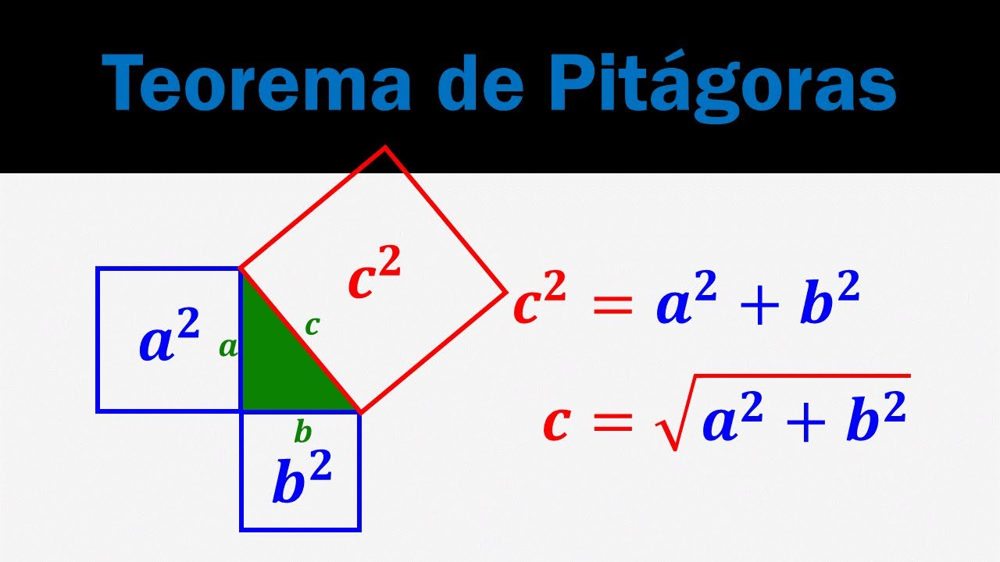
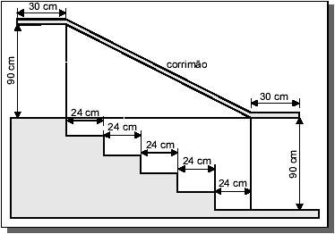

Resumo
O Teorema de Pitágoras é uma relação fundamental na geometria entre os comprimentos dos lados de um triângulo retângulo. Afirma que, em qualquer triângulo retângulo, o quadrado do comprimento da hipotenusa é igual à soma dos quadrados dos comprimentos dos outros dois lados.

Definição
O teorema de Pitágoras é um teorema fundamental da geometria que estabelece uma relação entre os comprimentos dos lados de um triângulo retângulo.
Ele afirma que: Em um triângulo retângulo, o quadrado do comprimento da hipotenusa (o lado oposto ao ângulo reto) é igual à soma dos quadrados dos comprimentos dos outros dois lados (os catetos).
Matematicamente, isso pode ser expresso como: a² + b² = c²
a e b são os comprimentos dos catetos (os lados adjacentes ao ângulo reto)
c é o comprimento da hipotenusa (o lado oposto ao ângulo reto)
Exemplo:
Uma escada está encostada em uma parede. A base da escada está a 3 metros da parede e o topo da escada está a 4 metros do chão.
Qual é o comprimento da escada?
Resolução:
a é a distância da base da escada até a parede (3 metros)
b é a altura da escada até o chão (4 metros)
Substituindo os valores dados no problema, obtemos:
a² + b² = c²
3² + 4² = c²
9 + 16 = c²
c² = 25
c = √25
c = 5 metros
Portanto, o comprimento da escada é de 5 metros.
Onde é utilizado o Teorema de Pitágoras?
O teorema de Pitágoras é amplamente utilizado em vários campos, incluindo arquitetura, engenharia e navegação. Ele também é usado para resolver problemas de geometria e trigonometria. Por exemplo, o teorema pode ser usado para encontrar a altura de um edifício medindo o comprimento de sua sombra e o ângulo de elevação do sol.
Exercícios 1
1- (ENEM). Na figura abaixo, que representa o projeto de uma escada de 5 degraus de mesma altura, o comprimento total do corrimão é igual a:

A) 1,8 m.
B) 1,9 m.
C) 2,0 m.
D) 2,1 m
E) 2,2 m.